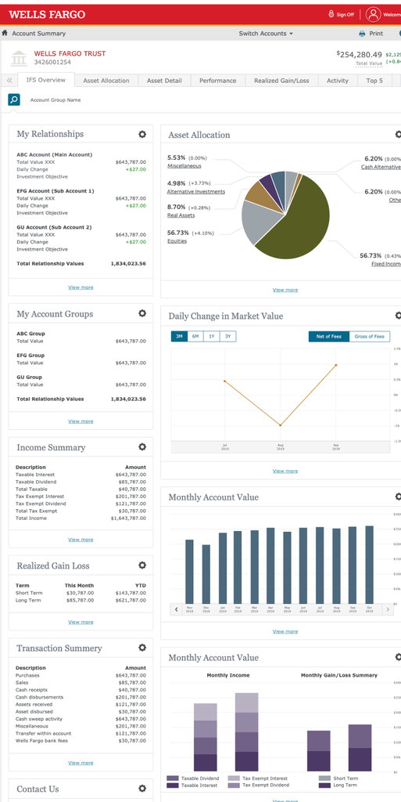
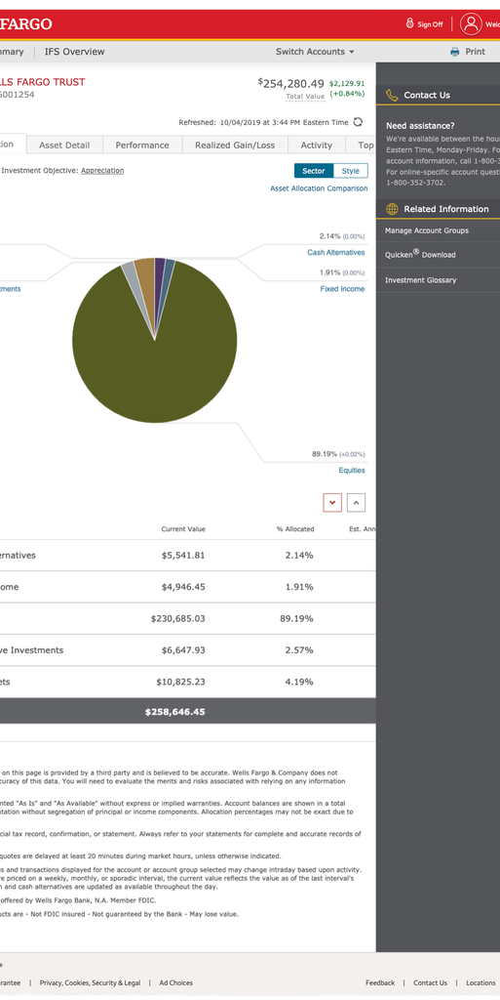

In 2009, I began working with the Trust Services line of business following Wachovia's acquisition by Wells Fargo. Trust Services served one of the bank's most valuable customer segments. Although the group represented only approximately 35,000–40,000 clients, those clients accounted for more than half of the wealth managed by the business. Their expectations were exceptionally high, and many enhancement requests came directly from clients or their Relationship Managers, making each design decision highly visible and business-critical.
In 2012, I led the design of a new online experience optimized for tablet use, presenting a number of significant design and technical challenges. The legacy "Classic" experience relied heavily on complex tables—many spanning 18–25 columns and requiring horizontal scrolling. At the time, our enterprise design library lacked many of the responsive and interaction patterns needed to support a modern tablet experience. We therefore had to develop new design approaches while working within the constraints of the existing platform.
Fortunately, IFS had its own dedicated development team and platform, enabling us to move quickly from design concepts to implementation. Their ability to rapidly prototype and develop new patterns was instrumental in overcoming technical constraints and bringing the new experience to life. Several of the patterns we pioneered—including a wider viewport and other responsive design approaches—were later adopted by Wells Fargo Online Banking, extending the impact of the work well beyond the Trust Services experience.
In 2017, as Design Manager, I continued this partnership, leading a talented design team in creating a mobile-optimized experience that extended and modernized the Trust Services digital experience.

